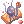

Illusion of Vampire (Español)
Quest Principal
| Requisitos | |
|---|---|
| Nivel Base: | 130 |
| Lugar de Inicio: | payon 157/229 |
| Recompensas | |
| Experiencia: | 50,000,000 (Base) y 50,000,000 (Job) |
| Items: | 5  Illusion Stones Illusion Stones
|
- Habla con Grimm (
gef_dun01 132/223) para empezar la Quest. El está discutiendo con Mojo y quiere que tu decidas quien tiene la razón. - Habla con Grimm nuevamente y empezarás a leer el primer capítulo del libro.
- Habla con el de nuevo. Esta vez te dice que una party ya fue enviada dentro de las memorias del libro y que deberías encontrarte con ellos.
- Habla con Grimm y elige Yes. Send me there para entrar al dungeon de Illusion of Vampire.
- Una vez dentro, te encontrarás con las personas del otro grupo. Habla con Gem para poder tener mas información. Ella te comenta que otro Priest se ha perdido.
- Encuentra a Jubilee en
gef_d01_i 250/164, Puedes checkear el minimapa para ver donde se encuentra.
Empezarás a ver las memorias del dueño del diario mientras caminas por el dungeon. - Habla con Wizard (
gef_d01_i 81/135). - Hablando con ella te enteras que es Bomi. Habla con ella nuevamente, ella quiere que recolectes y mates lo siguiente:
- 10
 Sticky Bloods (Drop de Matte Drainliars).
Sticky Bloods (Drop de Matte Drainliars). - 10
 Mushroom Saps (Drop de Illusion Black Mushrooms).
Mushroom Saps (Drop de Illusion Black Mushrooms). - Caza 5 Matte Drainliars.
- Caza 5 Illusion Black Mushrooms.
- 10
- Una vez ya tengas lo que te encargó, vuelve con Bomi y habla con ella.
- Ve hacia las catacumbas caminando hacia el sur y habla con Dracula (
gef_d01_i 189/98). - Habla con King (murciélago a la izquierda de Dracula).
- King siente olor a sangre, probablemente la gente de la iglesia encontró a Bomi. Ve a donde estuviste con ella para investigar.
- Habla con Bomi de nuevo.
- Habla con Gem a la entrada del dungeon y serás enviado fuera del cuaderno.
- Cuéntale a Grimm lo que ocurrió dentro. Serás recompensado con 5 Illusion Stones, además de un poco de experiencia.
Has desbloqueado todas las Quest Diarias de Illusion of Vampire.


Quest Diarias
Send the Dead Back to Earth
| Requisitos | |
|---|---|
| Nivel Base: | 130 |
| Lugar de Inicio: | gef_d01 113/230 |
| Recompensas | |
| Experiencia: | 12,500,000 (Base) y 12,500,000 (Job) |
| Items: | 2 Illusion Stones
|
- Habla con Gem y escoge Sure, why not? para aceptar esta quest.
- Tendrás que cazar los siguientes mobs:
- 10 Undead Zombies
- 10 Illusion Zombies
- 10 Illusion Ghouls
- Vuelve con Gem para cobrar tu recompensa.
Sweet Dreams
| Requisitos | |
|---|---|
| Nivel Base: | 130 |
| Lugar de Inicio: | gef_d01_i 116/228 |
| Recompensas | |
| Experiencia: | 12,500,000 (Base) y 12,500,000 (Job) |
| Items: | 2 Illusion Stones
|
- Habla con Antoine y elige Sure thing para aceptar esta quest.
- Mata 10 Sweet Nightmares y obtén 20 Shaggy Mane (Drop de los Sweet Nightmare).
- Vuelve con Antoine para cobrar tu recompensa.
Unreliable Fake Blood
| Requisitos | |
|---|---|
| Nivel Base: | 130 |
| Lugar de Inicio: | gef_d01_i 81/135 |
| Recompensas | |
| Experiencia: | 12,500,000 (Base) y 12,500,000 (Job) |
| Items: | 1 Illusion Stone
|
- Habla con Bomi y elige Sure thing para aceptar la quest.
Si Bomi no está en el lugar de siempre, significa que ha perdido el control. Debes buscarla y derrotarla. (La podrás encontrar vagando como un mob dentro del dungeon). - Necesitarás buscar y matar lo siguiente:
- 10 Mushroom Sap.
- 10 Sticky Blood.
- Caza 5 Matte Drainliars.
- Caza 5 Illusion Black Mushrooms.
- Vuelve con Bomi para cobrar tu recompensa.
Curious by Nature
| Requisitos | |
|---|---|
| Nivel Base: | 130 |
| Lugar de Inicio: | gef_dun01 134/224 |
| Recompensas | |
| Experiencia: | 12,500,000 (Base) y 12,500,000 (Job) |
| Items: | 1 Illusion Stone
|
- Habla con Mojo y elige What do you want to know the most? para empezar su quest.
- Necesitaras buscar y matar lo siguiente:
- 10
 Dried Yggdrasil Leaves
Dried Yggdrasil Leaves - 10
Suspicious Pentacles
- 5 Undead Zombies.
- 5 Illusion Zombies.
- 5 Illusion Ghouls.
- 10
- Vuelve con Mojo para recibir tu recompensa.
Studying in Dim Light
| Requisitos | |
|---|---|
| Nivel Base: | 130 |
| Lugar de Inicio: | gef_d01 190/96 |
| Recompensas | |
| Experiencia: | 12,500,000 (Base) y 12,500,000 (Job) |
| Items: | 1 Illusion Stone
|
- Habla con el Jojo y elige Jojo wanted to see me para empezar su quest.
- Necesitarás sacar los siguientes materiales:
- 10
 Shining Spores (Drop de Illusion Black Mushrooms).
Shining Spores (Drop de Illusion Black Mushrooms). - 10
 Cluster of Nightmares (Drop de Sweet Nightmares).
Cluster of Nightmares (Drop de Sweet Nightmares).
- 10
- vuelve con Jojo para cobrar tu recompensa.
Noisy Neighbors
| Requisitos | |
|---|---|
| Nivel Base: | 130 |
| Lugar de Inicio: | gef_d01_i 186/97 |
| Recompensas | |
| Experiencia: | 12,500,000 (Base) y 12,500,000 (Job) |
| Items: | 2 Illusion Stones
|
- Habla con King y elige They're annoying para aceptar su quest.
- Elimina 10 Matte Drainliars y recolecta 20
 Short Bat Hairs.
Short Bat Hairs. - Vuelve con King y cobra tu recompensa.
Todas las Quest se reinician a las 00:00 hora servidor.
Daily Quest Reset

Como mecánica exclusiva de NovaRO, puedes reiniciar los cooldowns de tus daily quests.
Esto significa que eres capaz de farmear cuantas Illusion Stones quieras con un único personaje, sin necesidad de crear personajes adicionales para evitar los cooldowns de las quests.
Para reiniciarlos, habla con Osmundi. Puedes encontrarlo dentro de cada Illusion Dungeon en las siguientes ubicaciones:
- Illusion of Moonlight .
- Illusion of Vampire .
- Illusion of Frozen .
- Illusion of Abyss .
- Illusion of Teddy Bear .
- Illusion of Luanda .
- Illusion of Labyrinth .
- Illusion of Underwater .
Los reinicios se separan en 3 categorías distintas acorde al grupo de dificultad en que cada dungeon se encuentra. Cada reset te recompensará con una cantidad determinada de  Illusion Stones:
Illusion Stones:
- Categoría 1: Illusion of Moonlight, Illusion of Vampire e Illusion of Frozen.
- Recompensa al resetear: 12 Illusion Stone
- Recompensa al resetear: 12
- Categoría 2: Illusion of Abyss, Illusion of Teddy Bear e Illusion of Underwater - Primer Piso.
- Recompensa al resetear: 18 Illusion Stone
- Recompensa al resetear: 18
- Categoría 3: Illusion of Luanda, Illusion of Labyrinth e Illusion of Underwater - Segundo Piso.
- Recompensa al resetear: 24 Illusion Stone
- Recompensa al resetear: 24
El primer reinicio del día, para cada grupo, te otorgará 6 Illusion Stone adicionales.
Una vez completes las dailies de cualquiera de las categorías de arriba, puedes reiniciar las daily quest de dicha categoría. Tras reiniciarlas, las quests no volverán a dar mas experiencia hasta que haya transcurrido el tiempo para su reinicio normal.
Cada categoría puede ser completada y reiniciada por separado, pero no puedes reiniciar las dailies de un Illusion Dungeon en particular sin haber completado las otras dailies de su respectiva categoría.
MVP Spawn
Para Spawnear al MVP Angry Dracula, Tendran que:
- Completar 30 veces la quest Unreliable Fake Blood (Global). Bomi aparecerá en el mapa y el NPC desaparecerá temporalmente.
- Una vez hayas derrotado a Bomi, El NPC reaparecerá y el Angry Dracula aparecerá para pelear contigo.
- Mientras el Angry Dracula esté con vida, el npc regular (cerca de las catacumbas) desaparecerá.
Mob
| Imagen | Nombre | Nivel | HP | Tamaño / Raza / Elemento |
|---|---|---|---|---|

|
Illusion Zombie | 130 | 40,984 | Medium / Undead / Undead 1 |

|
Undead Zombie | 133 | 53,926 | Medium / Undead / Undead 1 |

|
Illusion Ghoul | 136 | 67,379 | Medium / Undead / Undead 2 |
| Matte Drainliar | 131 | 42,246 | Small / Brute / Shadow 2 | |
| Sweet Nightmare | 135 | 61,334 | Large / Demon / Ghost 2 | |

|
Illusion Black Mushroom | 130 | 150,000 | Small / Plant / Earth 1 |

|
Bomi | 137 | 378,510 | Small / Demi-Human / Undead 2 |

|
 Angry Dracula Angry Dracula
|
139 | 6,909,690 | Large / Demon / Shadow 4 |
Cartas
| Carta | Va en: | Efecto |
|---|---|---|
| Armadura | Atk + 20
Arma y Armadura son indestructibles en batalla. En combo con ATK +1% por cada 3 niveles de refine de la armadura. | |
| Headgear | Immunidad al estado Burn
Perfect Dodge +5 | |
| Armadura | MATK +20
El tiempo de casteo del usuario no puede ser interrumpido fuera de WoE. En combo con MATK + 1% por cada 3 niveles de refine de la armadura. | |
| Accessorio | Permite el uso de  Napalm Vulcan Lv. 4. Napalm Vulcan Lv. 4.
En combo con MATK +30 En combo con Max HP +1000 Max SP +50 Si el nivel de refine del Garment equipado es igual o mayor a +9, Max HP +1000 y Max SP +50 adicional. | |
| Garment | Permite el uso de  Health Conversion Lv. 1 Health Conversion Lv. 1
En combo con Recupera 30 de HP y 1 SP del usuario cada 3 segundos. En combo con Max HP + 1000 Max SP + 50 Si el nivel de refine del Garment equipado es igual o mayor a +9, Max HP +1000 y Max SP +50 adicional. |


Equipo

Habla con Great Merchant (gef_dun01 139/228) en el mapa de Geffen Dugeon.
Necesitas tener equipado el item base para craftear su contraparte Illusion.
| Imagen | Nombre | Descripción | Creación |
|---|---|---|---|

|
 Illusion Infiltrator [2] Illusion Infiltrator [2]
|
Def +3
Flee +5 Perfect Dodge +2 Incrementa el daño físico contra monstruos de raza Demi-Human un 60%. Si el nivel de refine es igual o mayor a +9, Flee +5 y Perfect Dodge +2 adicional. Si el nivel de refine es igual o mayor a +10, ATK +5% En combo con ASPD +10% Si el nivel de refine de Si el nivel de refine de Tipo de Equipo: Katar Ataque: 200 Peso: 150 Nivel del Arma: 4 Nivel Mínimo: 100 Equipable por: Guillotine Cross |
|
| Illusion Sharpened Legbone of Ghoul [2] | Hay un 4% de probabilidad de transformar al usuario en un Ghoul durante 6 segundos cuando se realiza un ataque de corto alcance.
Cuando se esta transformado, la propiedad del usuario para a ser Undead. Otorga el efecto Endure mientras dure la transformación.
Ataque: 220 Peso: 170 Nivel del Arma: 3 Nivel Mínimo: 100 Equipable por: Guillotine Cross |
||
| Illusion Wizardry Staff [2] | MATK +250
Int +6 Dex +2 Int +1 y Dex +1 adicional por cada 2 niveles de refine del item hasta un máximo de +10.
Ataque: 150 Propiedad: Neutral Peso: 240 Nivel del Arma: 4 Nivel Mínimo: 100 Equipable por: Warlock, Sorcerer |
||
| Illusion Ballista [2] | Incrementa el daño de rango contra los objetivos en un 1% por cada nivel de refine del item.
En combo con Incrementa el daño de rango contra los objetivos en un 5%. Si los niveles de refine de Illusion Ballista [2] e Si la suma de los niveles de refine de Illusion Ballista [2] e Si la suma de los niveles de refine de Illusion Ballista [2] e
Ataque: 200 Peso: 350 Nivel del Arma: 4 Nivel Mínimo: 100 Equipable por: Ranger, Maestro, Wanderer |
| |

|
 Illusion Book of the Apocalypse [2] | Incrementa el daño físico contra objetivos de propiedad Water, Earth, Fire y Wind en 10%.
Incrementa el daño físico en un 10% adicional por cada 3 niveles de refine del item hasta un máximo de +10. Incrementa el daño recibido de enemigos de propiedad Holy un 30%. En combo con ASPD +8% Incrementa el daño crítico contra objetivos en 5% por cada 2 niveles de refine de Si el nivel de refine de Si el nivel de refine de
Ataque: 170 Peso: 80 Propiedad : Shadow Nivel del Arma: 4 Nivel Mínimo: 100 Equipable por: Arch Bishop, Sorcerer, Star Emperor |
|

|
 Illusion Ancient Cape [1] Illusion Ancient Cape [1]
|
Agi +2
Agi +1 adicional por cada 2 niveles de refine del item hasta un máximo de +10. En combo con Shadow Chaser Bonus: MATK +80 Si los niveles de refine de Si la suma de los niveles de refine de Si la suma de los niveles de refine de
Defensa: 18 Peso: 60 Nivel Mínimo: 100 Equipable por: Todos los Job excepto Novice |
|

|
 Illusion Skull Ring [1] Illusion Skull Ring [1]
|
Este accesorio solo puede ser equipado en el espacio de accesorios de la derecha.
Otorga una probabilidad de causar Curse en el objetivo cuando se realiza un ataque melee.
Peso: 10 Nivel Mínimo: 100 Equipable por: Todos los Job |
|

|
 Illusion Ring [1] Illusion Ring [1]
|
Str +3
Si la Str base del usuario es igual o mayor a 100, ATK +30. En combo con ASPD + 10% Si el nivel de refine de Si el nivel de refine de
Peso: 20 Nivel Mínimo: 100 Equipable por: Todos los Job excepto Novice |
 10
10  +7
+7 

 +7
+7 
 +7
+7  5
5 
 +7
+7